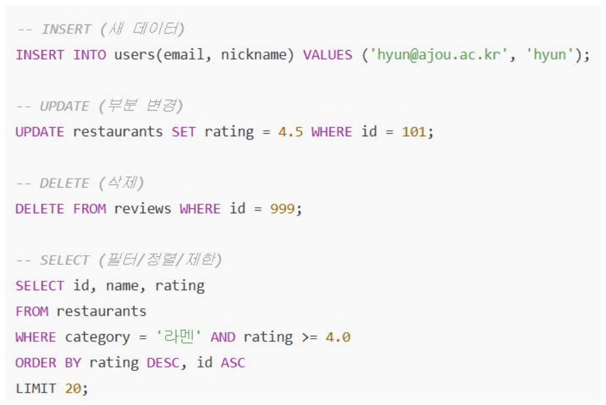

2026학년도 2학기 실전웹서비스개발
실전 웹서비스개발 – 7주차
데이터베이스 설계와 PostgreSQL · Supabase
LECTURE 07
학습 목표
데이터베이스 설계에서 클라우드 구축까지
- 데이터베이스 - 관계형 데이터와 설계 절차 이해
- 엔티티·관계·키·무결성의 역할
- PostgreSQL - 관계형 데이터베이스와 SQL 이해
- 테이블 정의와 데이터 조작의 기본 구조
- Supabase - 관리형 PostgreSQL 구축 흐름 이해
- 테이블 생성·조회와 데이터 접근 제어
01
데이터베이스 기초
데이터베이스
공유 데이터를 통합 관리하는 데이터의 집합
- 데이터베이스 - 공유되어 사용될 목적으로 통합 관리되는 데이터의 집합
- 여러 사용자가 공유하고 접근 가능
- 무결성 및 보안이 중요
- 데이터 관리 - 서비스 운영에 필요한 데이터의 지속적인 관리
- 정확성·보안·접근성을 함께 고려
DBMS
데이터베이스 생성과 관리를 지원하는 시스템
- DBMS - 데이터베이스를 만들고, 저장 및 관리할 수 있는 기능들을 제공하는 응용 프로그램
- 여러 사용자의 데이터 접근과 변경을 관리
- 역할 - 응용 프로그램과 저장된 데이터 사이의 관리 계층
- 권한·제약·복구 기능으로 데이터 관리 지원
데이터베이스 역사
- 1960s - 시작: 네트워크/계층형, Charles Bachman
- 기업 전산에서 데이터 독립성 요구가 커지며 DBMS 개념이 등장.
- 1970 - 관계형 이론: E. F. Codd
- 데이터를 엔티티와 관계로 표현
- 관계대수/관계해석 기반의 정형 질의(Query) 개념 정립.
- 정규화로 중복 최소화, 논리·물리적 데이터 독립성 강화.
- 1970s - System R & 핵심 기술 완성
- IBM System R에서 SQL 최초 구현
- RDBMS 필수 아키텍처가 표준화.
- 1970s~1990s - 오픈·상용 생태 확장
- ANSI SQL 표준화
- 클라이언트/서버 아키텍처 보급
- 1990s - Oracle 상용 선도: Larry Ellison/Bob Miner
- 대규모 상용 워크로드에서 확장성·고가용성으로 RDBMS가 기업 표준으로 자리잡음.
- 1995~ - 오픈소스 부상: MySQL + InnoDB, PostgreSQL
- LAMP(Linux + Apache + MySQL + PHP) 스택과 함께 대중화
- 2000s - 웹·빅데이터: NoSQL 등장
- 웹 규모 확장성 요구로 NoSQL 확산
- RDBMS는 여전히 코어 시스템으로 사용
데이터베이스 유형
- 관계형 데이터베이스(RDBMS) - 데이터를 테이블 형태로 구조화하여 저장하고, 각 테이블 간에 관계를 맺어 데이터를 관리
- 데이터의 정합성을 유지하고, SQL이라는 표준 쿼리 언어를 사용하여 복잡한 데이터 조작 및 검색이 가능
- 데이터의 구조 변경이 어렵고, 대규모의 비정형 데이터 처리에는 비효율적
- 주요 RDBMS : Oracle, MySQL, PostgreSQL, MariaDB
- 비관계형 데이터베이스(NoSQL DBMS) - 유연한 형태로 비정형 데이터를 저장
- 대규모의 분산 환경에서 뛰어난 확장성을 가지며, 유연한 데이터 모델링이 가능
- 복잡한 쿼리나 트랜잭션 처리가 어려울 수 있음
- 유형별
- 문서형(Document) DBMS: JSON과 같은 문서 형태로 데이터를 저장, MongoDB
- 키-값형(Key-Value) DBMS: 키와 값의 형태로 데이터를 저장하여 빠른 검색이 가능, Redis
- 그래프형(Graph) DBMS: 노드와 엣지 형태로 복잡한 관계를 표현하고 저장
2026년 10월 데이터베이스 트렌드
데이터베이스 관련 직군
- 데이터 모델러 - 데이터 구조, 관계, 제약 조건을 설계
- 데이터 아키텍트 - DBMS 선택 및 전체 데이터 아키텍처를 책임
- 데이터 엔지니어 - 데이터 파이프라인과 데이터 웨어하우스를 설계하고 구축
- DBA(Database Administrator) - 데이터베이스 운영, 모니터링, 백업, 보안 및 튜닝을 담당
02
데이터베이스 설계
데이터베이스 설계
서비스 요구사항을 데이터 구조로 변환
- 설계 - 서비스 요구 사항을 데이터 모델로 변환하여, 정확하고 빠르며 잘 확장되는 시스템을 만드는 작업
- 필요한 데이터와 데이터 사이의 관계를 식별
- 목표 - 정확성·성능·확장성·개발 속도
- 정확성: 잘못된·중복 데이터 방지
- 성능: 적절한 인덱스·스키마로 응답 속도와 동시성 확보, 비용 절감
- 확장성: 트래픽·데이터 증가에 맞춰 확장
- 개발 속도: 변경에 강한 스키마와 마이그레이션 전략 수립
데이터베이스 설계 절차
개념적 설계에서 물리적 설계까지
- 설계 흐름 - 개념적 설계 → 논리적 설계 → 물리적 설계
- 요구사항을 개념으로 표현하고 구현 가능한 구조로 구체화
- 반복 - 요구사항과 사용 방식에 따른 설계 검토
- 각 단계의 결정이 다른 단계에 영향을 줄 수 있음
개념적 설계
서비스의 대상을 데이터 개념으로 표현
- 개념적 설계 - 서비스의 요구를 데이터 세계의 개념(사물·행위)으로 표현
- 구현 방법보다 서비스의 의미와 업무 규칙에 집중
- FoodMap 사례 - 사용자·제보·맛집과 그 관계 식별
- 제보 승인에 따른 맛집 등록이라는 업무 규칙 표현
엔티티
저장할 대상의 종류
- 엔티티 - 저장할 대상의 종류
- 사용자·식당·주문 등이 엔티티의 예
- 각 인스턴스는 해당 대상의 개별 사례
- FoodMap 사례 - 사용자·식당·제보
- 하나의 식당은 식당 엔티티의 한 인스턴스
속성
엔티티를 설명하는 값의 항목
- 속성 - 엔티티를 설명하는 값의 항목
- 이름·전화번호 등이 속성의 예
- 각 인스턴스는 속성에 해당하는 값을 가짐
- 도메인 - 속성이 가질 수 있는 합법적 값의 집합과 단위·형식
- 예: 평점 1~5 정수
관계
엔티티 사이의 연관성
- 관계 - 엔티티 간의 연관성·연결
- 관계의 이름은 서비스에서 두 대상이 맺는 역할 표현
- FoodMap 사례 - 사용자가 제보를 작성
- 하나의 사용자가 여러 제보와 연결될 수 있음
카디널리티
관계에 참여할 수 있는 인스턴스의 개수
- 카디널리티 - 한쪽 엔티티가 다른 쪽과 맺을 수 있는 개수 규칙
- 1:1·1:N·N:M 관계로 표현
- 참여 제약 - 관계에 반드시 참여해야 하는지 또는 해도 되고 안 해도 되는지 결정하는 규칙
- 필수 참여와 선택 참여를 구분
논리적 설계
개념 모델을 데이터 구조와 규칙으로 변환
- 논리적 설계 - DBMS가 곧바로 이해·변환할 수 있는 논리 데이터 스키마를 만드는 작업
- 엔티티와 속성을 테이블과 열로 표현
- 스키마 - 데이터 구조와 규칙의 설계서
- 테이블·열·자료형·키·제약조건으로 구성
기본 키
각 행을 유일하게 구별하는 식별자
- 기본 키 - 테이블의 각 행을 식별하는 열 또는 열의 조합
- 값은 중복될 수 없으며 NULL을 허용하지 않음
- 식별 - 식당 이름처럼 바뀌거나 중복될 수 있는 값과 구분
- 여러 테이블이 동일한 대상을 참조하는 기준
외래 키
같은 테이블 또는 다른 테이블의 행을 참조하는 관계
- 외래 키 - 같은 테이블 또는 다른 테이블의 지정된 키를 참조하는 열 또는 열의 조합
- 참조 값이 대상 테이블에 존재하도록 관계를 검증
- 참조 대상 - 기본 키 또는 참조 가능한 고유한 키
- NULL 허용 여부는 별도의 제약조건으로 결정
물리적 설계
데이터 저장과 접근을 위한 구현 결정
- 물리적 설계 - 논리적 구조를 선택한 DBMS가 실제로 저장·조회할 수 있는 물리 구조로 구체화
- 데이터의 크기와 조회·변경 패턴을 고려
- 접근 경로 - 필요한 데이터를 찾기 위한 구조
- 인덱스와 저장 설정은 성능과 저장 비용에 영향
ERD
엔티티와 관계를 시각화한 데이터 설계도
- ERD - 엔티티·속성·관계·카디널리티를 그림으로 표현한 데이터 설계도
- 관계의 양쪽 끝에 참여 개수와 선택 여부 표시
- 제보와 맛집 - 제보 한 건당 맛집 0개 또는 1개
- 각 맛집은 정확히 하나의 출처 제보와 연결
제약조건
허용할 수 있는 데이터에 적용하는 규칙
- 제약조건 - 데이터가 만족해야 하는 조건을 데이터베이스에 정의
- 정의된 규칙에 맞지 않는 잘못된·중복·모순 데이터의 저장을 거부
- 적용 - 필수 값·고유성·참조 관계·값의 범위를 제한
- 응용 프로그램 외의 접근에도 동일한 규칙 적용
데이터 무결성
데이터가 항상 올바른 상태를 유지하는 성질
- 개체 무결성 - 각 행을 식별하는 기본 키의 고유성과 NULL 금지
- 같은 테이블의 행을 명확히 구분
- 참조·도메인 무결성 - 참조 관계와 속성의 허용 범위 유지
- 외래 키·자료형·값의 범위 등으로 규칙 표현
정규화
중복과 변경 이상을 줄이는 테이블 설계
- 정규화 - 데이터의 종속 관계에 따라 테이블을 구성하는 과정
- 불필요한 중복과 삽입·수정·삭제 이상 감소
- 변경 이상 - 같은 사실의 중복으로 발생하는 데이터 불일치
- 동일한 식당 이름이 여러 행에 있으면 일부만 수정될 수 있음
함수 종속
결정자에 따라 정해지는 속성의 값
- 함수 종속 - 한 속성 집합의 값이 다른 속성의 값을 결정하는 관계
- 결정자 값이 같으면 종속 속성의 값도 같아야 함
- FoodMap 사례 - 식당 ID → 식당 이름
- 하나의 식당 ID는 하나의 식당 이름을 결정
슈퍼키
테이블의 각 행을 구별하는 속성 집합
- 슈퍼키 - 행을 유일하게 식별하는 하나 이상의 속성 집합
- 식별에 불필요한 속성을 추가해도 유일성이 유지되면 슈퍼키
- FoodMap 사례 - 식당 ID와 식당 이름의 조합도 슈퍼키
- 식당 ID만으로 행이 유일하게 구별되는 경우
후보 키
불필요한 속성이 없는 최소 슈퍼키
- 후보 키 - 행을 유일하게 식별하는 최소 속성 집합
- 속성 하나라도 제거하면 유일한 식별이 불가능
- 기본 키와의 관계 - 후보 키 중 하나를 기본 키로 선택
- 식당 ID만으로 유일한 경우 식당 ID는 후보 키
주요 속성
후보 키에 속하는 속성
- 주요 속성 - 하나 이상의 후보 키에 속하는 속성
- 어느 후보 키에도 속하지 않는 속성은 비주요 속성
- 복합 후보 키 - 두 개 이상의 속성으로 구성된 후보 키
- 식당 ID와 메뉴 ID 조합이 후보 키라면 두 속성은 주요 속성
부분 종속
복합 후보 키의 일부에 대한 함수 종속
- 부분 종속 - 비주요 속성이 복합 후보 키의 일부에만 종속되는 관계
- 키 전체가 아닌 더 작은 키 부분으로 값 결정
- FoodMap 사례 - 식당 ID → 식당 이름
- 식당 ID·메뉴 ID가 복합 키일 때 식당 이름은 키의 일부에 종속
이행 종속
중간 속성을 거쳐 결정되는 함수 종속
- 이행 종속 - 한 속성이 중간 속성을 통해 다른 속성을 결정하는 관계
- A → B와 B → C가 성립하면 A → C가 성립
- FoodMap 사례 - 식당 ID → 지역 코드 → 지역 이름
- 지역 이름은 식당 ID에서 지역 코드를 거쳐 결정
제1정규형
각 열에 도메인 기준의 단일 값 저장
- 1NF - 다중값 분해 · 각 열에 해당 도메인의 원자값을 두는 정규형
- 여러 전화번호를 하나의 목록 문자열로 저장하지 않음
- 적용 - 반복되는 전화번호를 별도 행으로 표현
- 식당 ID로 전화번호 행을 해당 식당에 연결
제2정규형
복합 키의 일부에만 의존하는 속성 분리
- 2NF - 부분 종속 제거 · 1NF를 만족하고 비주요 속성의 부분 종속이 없는 정규형
- 비주요 속성은 후보 키의 일부가 아닌 전체에 종속
- 분리 사례 - 식당 ID·메뉴 ID → 가격, 식당 ID → 식당 이름
- 식당 이름을 식당 테이블로 옮겨 같은 이름의 중복 감소
| 분리된 테이블 | 속성 |
|---|---|
| 식당 | 식당 ID · 식당 이름 |
| 식당 메뉴 | 식당 ID · 메뉴 ID · 가격 |
제3정규형
비주요 속성 사이의 이행 종속 분리
- 3NF - 이행 종속 제거 · 비자명한 X → A에서 X가 슈퍼키이거나 A가 주요 속성인 정규형
- A는 X에 포함되지 않는 단일 속성 · 2NF를 만족
- 분리 사례 - 식당 ID → 지역 코드 → 지역 이름
- 지역 코드와 지역 이름을 지역 테이블에 분리
| 분리된 테이블 | 속성 |
|---|---|
| 식당 | 식당 ID · 지역 코드 |
| 지역 | 지역 코드 · 지역 이름 |
BCNF
모든 결정자가 슈퍼키인 정규형
- BCNF - 모든 비자명한 함수 종속의 결정자가 슈퍼키인 정규형
- 결정자가 후보 키를 포함해 행을 유일하게 식별
- 3NF와의 관계 - 주요 속성이 종속 속성인 경우에도 슈퍼키 조건 적용
- 3NF보다 강한 함수 종속 조건
03
PostgreSQL과 SQL
PostgreSQL
SQL을 사용하는 오픈소스 관계형 DBMS
- PostgreSQL - 관계형 데이터베이스를 관리하는 오픈소스 DBMS
- 테이블과 관계를 정의하고 SQL로 데이터를 처리
- 기능 - 자료형·제약조건·트랜잭션 등 제공
- 서비스 요구에 맞춰 구조와 접근 규칙을 구성
SQL
관계형 데이터베이스를 다루는 언어
- SQL - 관계형 데이터베이스(RDBMS)를 다루는 표준 언어
- DBMS에 명령을 전달하고 결과를 반환
- 명령의 범주 - 데이터 정의(DDL)·조작(DML)·권한 제어(DCL)·트랜잭션 제어(TCL)
- 구체적인 문법과 지원 기능은 DBMS에 따라 차이

PostgreSQL 자료형
열에 저장할 값의 종류와 범위
- 자료형 - 열에 저장할 수 있는 값의 종류와 연산을 정의
- 잘못된 형태의 값이 저장되는 것을 방지
- 주요 자료형 - text · integer · boolean · timestamp with time zone
- 문자열·정수·참거짓·시각 데이터 표현
테이블 생성
이름·열·자료형과 제약조건 정의
- CREATE TABLE - 테이블의 구조를 정의하는 SQL 명령
- 각 열에 이름과 자료형을 지정
- 제약조건 - 열에 허용되는 값을 제한하는 규칙
- 기본 키와 필수 값을 구조에 함께 정의
SQL Editor
CREATE TABLE restaurants ( id bigint GENERATED ALWAYS AS IDENTITY PRIMARY KEY, name text NOT NULL, address text NOT NULL );
제보 테이블 생성
제보의 식별자와 내용을 저장
- 제보 테이블 - 각 제보를 하나의 행으로 저장하는 구조
- 기본 키는 개별 제보를 식별
- 관계의 기준 - 맛집은 이 식별자를 참조해 출처 제보와 연결
- 제보와 맛집은 독립된 테이블로 관리
SQL Editor
CREATE TABLE submissions ( id bigint GENERATED ALWAYS AS IDENTITY PRIMARY KEY, name text NOT NULL );
제보와 맛집의 관계
외래 키와 고유 제약으로 관계 구현
- 외래 키 - 맛집의 제보 식별자가 존재하는 제보를 참조
- 각 맛집에는 출처 제보가 반드시 하나 필요
- 고유 제약 - 하나의 제보 식별자가 여러 맛집 행에 반복되지 않도록 제한
- 제보당 연결된 맛집은 최대 한 개 · 승인 처리는 별도 로직
SQL Editor · 빈 restaurants 테이블 기준
ALTER TABLE restaurants ADD COLUMN submission_id bigint NOT NULL UNIQUE REFERENCES submissions(id);
제보 데이터 추가
새 제보를 저장하고 식별자 확인
- INSERT - 열과 값을 지정해 새 행을 생성
- 생성된 식별자는 RETURNING으로 확인
- 연결 준비 - 식당 행에 저장할 출처 제보의 식별자 확인
- 다른 식당은 이 제보를 중복 참조할 수 없음
SQL Editor · submissions
INSERT INTO submissions (name)
VALUES ('Campus Kitchen')
RETURNING id;
데이터 추가
테이블에 새로운 행 저장
- INSERT - 지정한 열에 값을 넣어 새로운 행을 생성
- 생략한 열은 기본값 또는 허용된 NULL 사용
- 무결성 - 추가되는 행에 테이블의 제약조건 적용
- 허용되지 않는 값은 저장되지 않음
SQL Editor · 반환된 제보 id가 1인 경우
INSERT INTO restaurants (name, address, submission_id)
VALUES ('Campus Kitchen', 'Suwon', 1);
데이터 조회
조건에 맞는 행과 필요한 열 선택
- SELECT - 테이블에서 지정한 열의 값을 조회
- WHERE 조건으로 반환할 행의 범위 제한
- 결과 - 조회 결과는 조건을 만족하는 행의 집합
- 정렬을 지정하지 않으면 반환 순서는 보장되지 않음
SQL Editor
SELECT id, name, address FROM restaurants WHERE address = 'Suwon';
JOIN
관계로 연결된 테이블의 데이터 결합
- JOIN - 공통 값의 비교를 이용해 여러 테이블의 행을 결합
- 결합 조건은 어떤 행을 연결할지 결정
- 관계 활용 - 제보와 맛집의 식별값을 이용해 연결
- 내부 결합은 양쪽에 일치하는 행만 반환
SQL Editor · 연결된 제보와 맛집이 있는 경우
SELECT s.name, r.name FROM submissions AS s JOIN restaurants AS r ON r.submission_id = s.id;
데이터 수정
기존 행의 열 값 변경
- UPDATE - 조건에 맞는 기존 행의 값을 변경
- SET으로 변경할 열과 값을 지정
- 변경 범위 - WHERE 조건이 적용 대상 행을 결정
- 조건이 없으면 테이블의 모든 행이 대상
SQL Editor · 예시 행의 id가 1인 경우
UPDATE restaurants SET address = 'Ajou University' WHERE id = 1;
데이터 삭제
조건에 맞는 기존 행 제거
- DELETE - 테이블에서 조건에 맞는 행을 제거
- 열의 구조가 아니라 행의 데이터가 삭제 대상
- 삭제 범위 - WHERE 조건으로 제거할 행을 제한
- 조건이 없으면 테이블의 모든 행이 대상
SQL Editor · 예시 행의 id가 1인 경우
DELETE FROM restaurants WHERE id = 1;
04
Supabase 데이터베이스 구축
Supabase
PostgreSQL을 중심으로 구성한 백엔드 개발 플랫폼
- 기반 - 프로젝트별 PostgreSQL 데이터베이스 제공
- 테이블·SQL·제약조건을 실제 PostgreSQL에서 처리
- 서비스 - 데이터베이스에 API와 관리 도구를 결합
- 인증·스토리지·실시간 기능도 제공하는 오픈 소스 생태계
Supabase의 출발과 성장
오픈 소스 개발 도구에서 관리형 플랫폼으로
- 출발점 - Firebase의 개발 편의성을 PostgreSQL과 연결
- Paul Copplestone·Ant Wilson이 시작한 오픈 소스 프로젝트
- 발전 방향 - 개발자 경험과 기존 오픈 소스 도구의 결합
- 데이터베이스 구축과 연결에 필요한 반복 작업을 서비스로 제공
- 2020년 1월
개발 시작 · 2020년 YC 여름 배치 참여
- 2024년 4월 15일
정식 서비스 GA 발표
- 2026년 4월 2일
GitHub 별 10만 개 달성 발표
Supabase의 현재 구성
2026년 11월 2일 공식 문서 확인 기준
- 중심 구조 - 관리형 PostgreSQL에 여러 백엔드 기능 연결
- 한 프로젝트에서 데이터와 관련 서비스를 관리
- 실습에서의 선택 - Database와 Data API만 사용
- 제공되는 모든 서비스를 애플리케이션에 도입할 필요는 없음
| 구성 | 제공 역할 |
|---|---|
| Database · Data API | SQL 저장·제약 적용 · HTTP 데이터 접근 |
| Auth | 사용자 인증 |
| Storage | 이미지 등 파일 보관 |
| Realtime | 변경 사항 전달·실시간 통신 |
관리형 데이터베이스의 의의
서버 프로세스와 데이터의 수명 분리
- 지속성 - 프로세스 메모리 밖에 데이터를 보관
- Express 종료·재시작 후에도 같은 DB 행 조회
- 역할 분담 - 플랫폼은 DB 운영, 개발자는 구조와 요청 처리 담당
- SQL로 데이터 규칙 정의 · Express로 기존 API와 검증 유지
- 학습의 연결 - 관계형 모델과 SQL을 웹서비스 요청에 적용
- 클라이언트 → 서버 → DB의 전체 흐름을 실제 배포 환경에서 확인
이번 실습의 요청 흐름
기존 클라이언트 API 뒤에 Supabase 연결
- 클라이언트 요청 - React는 기존 Express API 호출
- 브라우저에 Supabase Secret key를 전달하지 않는 구조
- 서버 요청 - Express가 SDK로 Data API에 접근
- HTTP 데이터 요청이 PostgreSQL 조회·입력으로 이어지고 결과가 기존 응답으로 반환
- Vercel · React
목록·상세·등록 요청
- Render · Express
입력 검증 · SDK 호출 · 응답 변환
- Supabase · PostgreSQL
Data API를 통한 행 조회·저장
pwd-week7의 저장 범위
완료된 구현의 실제 저장 위치
- 실습 테이블 - 기존 Restaurant의 10개 필드 저장
- 앞 장의 제보–맛집 관계 SQL은 별도 설계 예제 · 이번 실행 스키마는 restaurants 하나
- 동작 유지 - 저장소 변경 후에도 기존 API와 화면 사용
- 평점순 인기 목록 · 기존 생성 요청 · 비활성 수정·삭제 버튼 유지
| 정보 | 현재 저장 위치 |
|---|---|
| 맛집 기본 정보 | Supabase restaurants |
| 제보·승인 상태 | 기존 브라우저 LocalStorage |
| 화면의 좋아요 상태 | 기존 브라우저 LocalStorage |
| 이미지 | DB에는 URL 문자열 · 파일은 기존 외부 서버 |
Supabase 프로젝트 준비
SQL을 실행할 데이터베이스와 연결 정보 확보
- 프로젝트 - 이름·지역·DB 암호를 정해 생성하는 관리 단위
- 대시보드의 SQL Editor와 Table Editor가 같은 프로젝트 DB 사용
- 연결 정보 - Project URL과 서버용 Secret key 준비
- Express의 환경변수에만 설정 · Data API 활성화 확인
실행한 SQL 파일의 역할
구조와 권한을 준비한 뒤 초기 데이터 입력
- schema.sql - 테이블·접근 권한·초기화 함수 정의
- 함수 정의만으로 기존 행이 초기화되지는 않음
- seed.sql - 테이블이 비어 있을 때만 원본 3건 입력
- 행이 있으면 초기화 함수를 호출하지 않는 조건부 실행
- schema.sql
테이블 · 권한 · 함수 정의
- seed.sql
빈 테이블에만 원본 3건 입력
- SELECT
저장된 열 값과 행 확인
SQL 실행과 결과 확인
같은 데이터베이스를 다루는 두 관리 도구
- SQL Editor - SQL 문장을 DB에 실행하는 도구
- schema.sql → seed.sql 순서로 실행한 뒤 SELECT로 결과 확인
- Table Editor - 테이블의 열과 행을 시각적으로 확인하는 도구
- 원본 맛집 3건과 등록 후 추가 행 확인 · 관리자 조회와 API 권한은 별개
restaurants 테이블 생성
스키마 이름·테이블 이름·열 정의의 구성
- CREATE TABLE - 이름과 열 정의로 저장 구조 생성
- public.restaurants는 public 스키마 안의 restaurants 테이블
- IF NOT EXISTS - 같은 이름의 테이블이 있으면 생성 생략
- 기존 테이블의 잘못된 열이나 제약을 수정하는 명령은 아님
schema.sql · 테이블 정의 전체 · 줄바꿈 조정
create table if not exists public.restaurants (
id bigint generated by default
as identity primary key,
name text not null,
category text not null,
location text not null,
price_range text not null default '정보 없음',
rating numeric not null default 0,
description text not null default '',
recommended_menu text[] not null default '{}',
likes integer not null default 0,
image text not null default ''
);
실습 열의 자료형
저장할 값의 형태에 맞춘 PostgreSQL 타입
- 자료형 - 각 열에 저장 가능한 값의 종류 지정
- 평점은 numeric · 좋아요 수는 integer · 식별자는 bigint
- 문자열 - 이름·위치·가격대·설명·이미지 주소를 text로 저장
- image의 값은 파일 내용이 아닌 URL 또는 빈 문자열
| 자료형 | 이번 테이블의 열 |
|---|---|
| bigint | id |
| text | name · category · location · price_range |
| text | description · image |
| numeric · integer | rating · likes |
| text[] | recommended_menu |
맛집 ID의 자동 생성
값 생성은 IDENTITY · 중복 방지는 PRIMARY KEY
- IDENTITY - 연결된 시퀀스로 생략된 ID 값 생성
- BY DEFAULT는 명시적인 ID 입력도 허용 · 원본 3건의 ID 복원에 사용
- PRIMARY KEY - 행 식별 값의 중복과 NULL 금지
- 자동 생성만으로 고유성이나 빈 번호 없는 연속성을 보장하지 않음
schema.sql · id 열 정의 발췌
id bigint generated by default as identity primary key
NOT NULL 제약조건
값이 없음을 나타내는 NULL의 저장 제한
- 필수 값 - NOT NULL 열에는 NULL을 저장할 수 없음
- 기본값 없는 name·category·location은 입력 값 필요
- 빈 문자열 - NULL과 다른 문자열 값
- NOT NULL만으로 공백·빈 문자열을 막지 않으므로 기존 서버 검증도 유지
schema.sql · 필수 열 발췌
name text not null, category text not null, location text not null,
DEFAULT 기본값
입력에서 생략한 열에 사용할 값
- 적용 시점 - 열을 생략하거나 DEFAULT를 지정할 때 적용
- 명시한 NULL을 기본값으로 바꾸는 규칙은 아님
- 실습 값 - 미입력 정보의 초기 표현 정의
- 가격대는 정보 없음 · 평점·좋아요 수는 0 · 설명·이미지는 빈 문자열
schema.sql · 기본값이 있는 열 발췌
price_range text not null default '정보 없음', rating numeric not null default 0, description text not null default '', likes integer not null default 0, image text not null default ''
추천 메뉴의 배열 저장
여러 문자열을 하나의 text[] 열에 보관
- text[] - 문자열 원소를 담는 PostgreSQL 배열 타입
- 클라이언트의 recommendedMenu 배열과 대응
- 배열 값 - 빈 배열은 원소가 없는 값 · NULL과 구별
- 초기 데이터의 ARRAY[...]는 메뉴 원소 구성 · ::text[]는 타입 지정
schema.sql · 열 정의와 초기 데이터 배열 표현 발췌
recommended_menu text[] not null default '{}'
array['떡볶이', '튀김', '순대', '어묵']::text[]
API 키와 DB 역할
요청이 실행될 권한의 기준
- 공개 키 - 브라우저 등에 배포할 수 있는 Publishable key
- 로그인 없는 요청은 anon 역할 · 이번 테이블의 직접 접근 권한 없음
- 서버 키 - Express에서 사용하는 Secret key
- service_role로 요청 · RLS 우회 권한이 있어 서버 환경변수에서 보호
RLS와 테이블 접근
행 정책과 객체 권한의 구분
- RLS - 일반 역할의 접근 가능 행을 정책으로 제한
- SQL로 만든 테이블은 명시적으로 활성화 · 정책이 없으면 일반 역할의 행 접근 기본 차단
- 이번 실습 - anon·authenticated의 테이블 권한 회수
- Express의 service_role은 RLS 우회 · 테이블 자체의 SQL 권한은 별도로 필요
schema.sql · 행 정책 활성화와 권한 회수
alter table public.restaurants enable row level security; revoke all on table public.restaurants from anon, authenticated;
서버의 테이블 권한
대상 객체와 허용할 작업을 지정하는 GRANT
- 스키마 USAGE - 해당 스키마 안 객체에 접근할 기반 권한
- 스키마 사용 권한만으로 테이블 조회·등록이 허용되지는 않음
- 테이블 권한 - SELECT 조회 · INSERT 입력 · DELETE 삭제 허용
- DELETE는 기존 초기화 함수에 필요 · GRANT와 REVOKE는 행 데이터를 변경하지 않음
schema.sql · 스키마와 테이블 권한
grant usage on schema public to service_role; grant select, insert, delete on table public.restaurants to service_role;
ID 시퀀스의 권한
번호 생성 객체는 테이블과 별도로 관리
- 시퀀스 - IDENTITY의 번호 상태를 관리하는 DB 객체
- restaurants_id_seq는 restaurants 테이블과 다른 권한 대상
- 허용 작업 - USAGE·SELECT·UPDATE를 서버 역할에 부여
- 번호 생성·조회·재설정에 사용하는 권한 · setval에는 UPDATE 필요
schema.sql · 시퀀스 권한
grant usage, select, update on sequence public.restaurants_id_seq to service_role;
초기화 함수의 정의
여러 SQL 작업을 이름 있는 DB 함수로 묶기
- CREATE OR REPLACE FUNCTION - DB에 호출 가능한 함수 정의를 저장
- 빈 괄호는 입력 인자 없음 · RETURNS void는 반환할 데이터 없음
- 함수 본문 - PL/pgSQL로 작성한 실행 영역
- $$는 본문 문자열의 경계 · BEGIN과 END는 문장 블록의 경계
schema.sql · 함수 선언부 발췌 · 본문은 다음 화면
create or replace function public.reset_restaurant_demo_data() returns void language plpgsql security invoker set search_path = '' as $$
함수의 실행 환경
호출자 권한과 객체 이름의 해석
- SECURITY INVOKER - 함수를 호출한 역할의 권한으로 실행
- Express의 service_role에 부여한 테이블·시퀀스 권한을 사용
- search_path - 접두어 없는 객체 이름을 찾는 경로
- 빈 경로를 설정하고 public·pg_catalog를 명시해 사용할 객체를 식별
schema.sql · 실행 설정과 이름 표현 발췌
security invoker set search_path = '' public.restaurants pg_catalog.setval
초기화 함수의 데이터 처리
현재 행을 제거하고 원본 3건 복원
- 삭제 - WHERE 없는 DELETE로 모든 행 제거
- 추가 등록한 맛집도 대상 · 테이블의 열 구조는 유지
- 입력 - INSERT의 열 순서에 맞춰 원본 값 입력
- id 1·2·3을 명시 · 메뉴는 text[] · image는 기존 외부 URL 문자열
| 명시한 id | 원본 이름 | 평점 |
|---|---|---|
| 1 | 송림식당 | 4.99 |
| 2 | 별미떡볶이 | 4.92 |
| 3 | SOGO | 4.89 |
초기화의 실행 단위
한 호출 안에서 삭제와 입력을 함께 처리
- 행 변경의 원자성 - 처리되지 않은 오류가 나면 삭제·입력 롤백
- 삭제만 반영되고 원본 입력은 빠지는 중간 상태 방지
- 테이블 잠금 - 초기화 동안 다른 쓰기 작업의 진행 제한
- EXCLUSIVE 잠금은 트랜잭션 종료까지 유지 · 일반 SELECT는 가능
schema.sql · 함수 본문 시작 부분 발췌
begin
lock table public.restaurants
in exclusive mode;
delete from public.restaurants;
초기 ID와 시퀀스 맞추기
명시한 1·2·3 다음 번호를 4로 설정
- 시퀀스 찾기 - pg_get_serial_sequence로 id에 연결된 객체 확인
- 수동으로 ID를 입력해도 시퀀스 번호가 자동으로 맞춰지는 것은 아님
- setval - 현재 번호 3 · 이미 사용한 상태 true로 설정
- 다음 자동 번호는 4 · 시퀀스 상태 변경은 트랜잭션 롤백 대상이 아님
schema.sql · 초기화 함수의 번호 재설정
perform pg_catalog.setval(
pg_catalog.pg_get_serial_sequence(
'public.restaurants', 'id'),
3, true);
초기화 함수의 실행 권한
함수 호출도 EXECUTE 권한으로 제어
- 권한 회수 - PUBLIC·anon·authenticated의 호출 권한 회수
- 여기서 PUBLIC은 모든 역할 · public 스키마 이름과 다른 의미
- 서버 호출 - service_role에 EXECUTE 허용
- 기존 reset-demo API가 SDK의 rpc로 호출 · 함수 내부 작업 권한도 필요
schema.sql · 함수 권한
revoke all on function public.reset_restaurant_demo_data() from public, anon, authenticated; grant execute on function public.reset_restaurant_demo_data() to service_role;
최초 데이터의 조건부 입력
seed.sql은 테이블이 비어 있을 때만 실행
- DO 블록 - 이름을 저장하지 않는 일회성 PL/pgSQL 실행
- IF NOT EXISTS는 SELECT 1 결과 행의 존재 여부 검사
- PERFORM - 반환값을 받지 않고 함수 실행
- 빈 테이블이면 원본 3건 복원 · 행이 있으면 생략하므로 재실행 시 기존 데이터 유지
seed.sql · 전체 · 줄바꿈 조정
do $$
begin
if not exists (
select 1 from public.restaurants
) then
perform public.reset_restaurant_demo_data();
end if;
end;
$$;
저장 결과의 SQL 조회
원본 3건과 이후 등록 행을 같은 테이블에서 확인
- SELECT - 필요한 열을 골라 저장된 행 조회
- FROM으로 테이블 선택 · ORDER BY id로 식별자 순서 정렬
- 확인 기준 - 이름·가격대·평점·메뉴 배열의 값 확인
- 입력하지 않은 새 맛집 ID가 DB에서 자동 생성되는지도 확인
실습 확인용 SQL · 데이터 변경 없음
select id, name, price_range,
rating, recommended_menu
from public.restaurants
order by id;
DB 행과 기존 API의 대응
저장 형태를 바꾸어도 클라이언트의 약속 유지
- 입력 - 서버가 기존 요청을 검증한 뒤 DB 열 이름으로 변환
- ID는 생략해 DB에서 생성 · insert 후 저장된 행 반환
- 출력 - DB 행을 Restaurant 모델의 기존 필드로 변환
- 목록·상세·인기 응답은 { data: ... } 유지 · 등록 성공 201 유지
| DB 열 | 기존 API 필드 |
|---|---|
| price_range | priceRange |
| recommended_menu | recommendedMenu |
| name · rating · image 등 | 동일한 이름 유지 |
서버 재시작과 영구 저장 검증
프로세스를 바꾸어도 동일한 DB 행 유지
- 검증 절차 - 등록 → 반환 ID 조회 → 종료 → 새 프로세스로 재시작
- 재시작 후 같은 ID·필드 조회 · Supabase의 실제 행과 비교
- 확인 결과 - id 4의 등록 데이터가 재시작 후에도 동일
- 원본 3건도 유지 · 전체 4건 확인 · 초기화 API 호출 없이 검증
- 등록
POST 응답 201 · id 4
- 재시작
서버 프로세스 완전 종료 후 새로 실행
- 대조
같은 상세 응답 · 실제 Supabase 행 일치
배포 환경의 연결 설정
Vercel은 Express 주소 · Render는 Supabase 자격 증명
- Vercel - VITE_API_BASE_URL에 기존 Render 주소 설정
- https://ajou-food-map.onrender.com · 기존 클라이언트 API 경로 유지
- Render - pwd-week7 서버에 DB 환경변수 설정
- SUPABASE_URL · SUPABASE_SECRET_KEY · 배포 후 DB 목록과 상세로 확인
실제로 확인한 연결 오류
오류가 난 계층과 설정의 대응
- 점검 순서 - 서버 실행 → 환경변수 → DB 권한 → API → 화면
- 연결 실패를 화면 문제로 단정하지 않고 실제 오류와 설정 대조
| 관찰한 문제 | 확인·해결한 내용 |
|---|---|
| Publishable key 사용 · 42501 | Express에 서버용 Secret key 설정 |
| Render에 DB 환경변수 없음 | 해당 서비스에 두 SUPABASE 변수 추가·재배포 |
| API 3건 · DB 4건 | Render 소스 저장소와 Live 배포 확인 |
7주차 실습의 완료 기준
SQL 정의부터 기존 화면까지 결과 대조
- SQL 이해 - 테이블·열·제약·권한·초기화·시딩의 역할 설명
- schema.sql은 구조 정의 · seed.sql은 조건부 입력 · reset-demo는 전체 초기화
- 동작 확인 - DB와 API와 Vercel 화면의 같은 맛집 정보 확인
- 목록·상세·평점순 인기 목록 · 재시작 후 등록 행 유지
- 검증된 범위 - 실제 DB 4건과 공개 API·클라이언트 조회 일치
- 이미지 URL 표시 유지 · 파일 업로드·제보·좋아요의 DB 이전은 이번 완료 범위 밖
Q&A
데이터베이스 설계와 구축